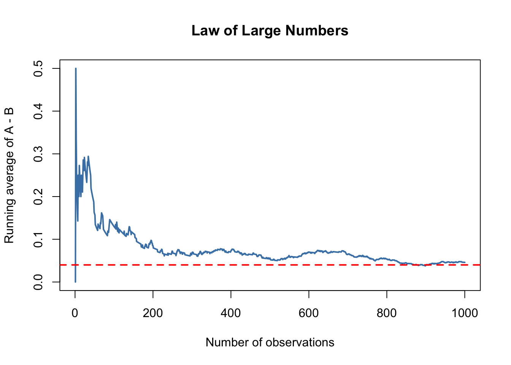
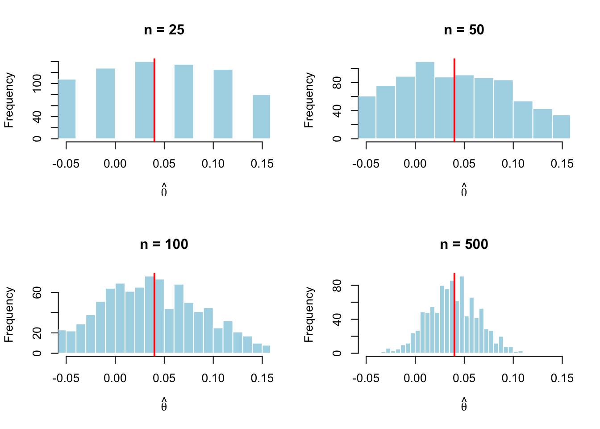

set.seed(123)
n <- 1000
pi_A <- 0.22
pi_B <- 0.18
A <- rbinom(n, size = 1, prob = pi_A)
B <- rbinom(n, size = 1, prob = pi_B)
theta_true <- pi_A - pi_B
theta_hat <- mean(A) - mean(B)
theta_true[1] 0.04theta_hat[1] 0.046Simulating Key Ideas from Classical Frequentist Statistics
Yiwei Zhang
April 15, 2026
Running a website often involves small design decisions that can influence user behavior. On my landing page, visitors have the option to sign up for a newsletter, and I want to determine which wording of a call to action (CTA) leads to more sign-ups.
I compare two versions of the CTA. CTA A reads “Sign up for our newsletter here!”, while CTA B reads “Stay up to date by signing up!”. These two messages are similar, but even small differences in wording may affect how users respond.
To evaluate which version performs better, I conduct an A/B test. In an A/B test, visitors are randomly assigned to one of two groups. One group sees CTA A and the other sees CTA B. By comparing the sign-up rates between the two groups, I can determine which CTA is more effective at encouraging users to subscribe.
In this section, I translate the A/B test into a formal statistical framework.
Each visitor either signs up or does not, so the outcome for each visitor can be modeled as a Bernoulli random variable. If a visitor signs up, the outcome is 1; otherwise, it is 0.
Because the CTA shown to a visitor may affect their behavior, I allow the probability of signing up to differ across the two groups. Let \(\pi_A\) denote the probability of signing up for visitors who see CTA A, and let \(\pi_B\) denote the probability for those who see CTA B.
The quantity of interest is the difference in sign-up rates:
\[ \theta = \pi_A - \pi_B \]
To estimate this quantity, I use the difference in sample means:
\[ \hat{\theta} = \bar{X}_A - \bar{X}_B \]
Since each observation is either 0 or 1, the sample mean corresponds to the proportion of users who signed up. Therefore, \(\bar{X}_A = \hat{\pi}_A\) and \(\bar{X}_B = \hat{\pi}_B\), so this estimator represents the difference in observed conversion rates between the two CTAs.
In a real-world A/B test, we would not know the true values of \(\pi_A\) and \(\pi_B\). Instead, we would observe user behavior and estimate these probabilities from data. For the purpose of this exercise, however, I set these values manually so that I can evaluate how well my estimator performs when the true parameters are known.
I assume that \(\pi_A = 0.22\) and \(\pi_B = 0.18\), so the true difference is:
\[ \theta = 0.22 - 0.18 = 0.04 \]
Using these values, I simulate 1,000 observations for each group.
[1] 0.04[1] 0.046The estimated difference is close to the true value, but not exactly equal due to randomness in the simulated data.
The Law of Large Numbers states that as the sample size increases, the sample mean converges to the population mean. In this setting, this means that our estimator \(\hat{\theta}\) should become closer to the true value of \(\theta\) as we observe more data.
To demonstrate this, I compute the difference between the simulated outcomes for groups A and B, and then calculate the cumulative average of that difference as the sample size increases.

At the beginning, the running average fluctuates significantly because the sample size is small. As more observations are included, the estimate stabilizes and converges toward the true value of 0.04. This illustrates the Law of Large Numbers in practice.
Now that we have an estimate of \(\theta\), the next question is how precise that estimate is. Instead of reporting only a single value, we would like to quantify the uncertainty around it, typically using a standard error and a confidence interval.
One way to estimate this uncertainty is through bootstrapping. The bootstrap is a resampling method that allows us to approximate the sampling variability of an estimator without relying on a closed-form formula. The idea is to repeatedly resample from our observed data (with replacement), compute the statistic of interest each time, and then examine how much those estimates vary.
In this case, I repeatedly resample from the simulated data for groups A and B, compute the difference in sample means for each resample, and use the variation across these estimates to approximate the standard error.
[1] 0.01668652[1] 0.01768875The bootstrapped standard error and the analytical standard error are very close to each other. This is expected because the analytical formula is derived under assumptions that hold in this setting, while the bootstrap provides a data-driven estimate of the same quantity.
[1] 0.01329441[1] 0.07870559Using the bootstrapped standard error, I construct a 95% confidence interval for \(\theta\). This interval provides a range of plausible values for the true difference in sign-up rates.
In this case, the confidence interval lies entirely above zero. This suggests that CTA A performs better than CTA B at the 5% significance level. In other words, we have statistical evidence that the difference in conversion rates is positive.
The Central Limit Theorem (CLT) states that regardless of the shape of the underlying population distribution, the sampling distribution of the sample mean becomes approximately Normal as the sample size increases.
In this setting, this means that the distribution of the estimator \(\hat{\theta} = \bar{X}_A - \bar{X}_B\) should become more bell-shaped as the number of observations grows. To illustrate this, I simulate the sampling distribution of \(\hat{\theta}\) for different sample sizes.
set.seed(123)
sample_sizes <- c(25, 50, 100, 500)
par(mfrow = c(2, 2)) # 2x2 布局
for (n_temp in sample_sizes) {
theta_vals <- numeric(1000)
for (i in 1:1000) {
A_sim <- rbinom(n_temp, 1, pi_A)
B_sim <- rbinom(n_temp, 1, pi_B)
theta_vals[i] <- mean(A_sim) - mean(B_sim)
}
hist(
theta_vals,
breaks = 30,
col = "lightblue",
border = "white",
main = paste("n =", n_temp),
xlab = expression(hat(theta)),
xlim = c(-0.05, 0.15)
)
abline(v = theta_true, col = "red", lwd = 2)
}
The histograms show that when the sample size is small (e.g., n = 25), the distribution of \(\hat{\theta}\) appears irregular and somewhat asymmetric. As the sample size increases, the distribution becomes smoother and more symmetric.
By the time the sample size reaches 500, the distribution is clearly bell-shaped and closely resembles a Normal distribution. This illustrates the Central Limit Theorem in action: even though the underlying data are Bernoulli, the sampling distribution of the estimator becomes approximately Normal for large samples.
Now that we have seen the Central Limit Theorem in action, we can use it to perform a formal hypothesis test.
A hypothesis test allows us to assess whether the observed data provide enough evidence to support a claim. In this setting, we test the null hypothesis:
\[ H_0: \theta = 0 \]
which states that the two CTAs have the same sign-up rate. The alternative hypothesis is:
\[ H_1: \theta \neq 0 \]
which states that the sign-up rates differ.
To perform the test, we standardize our estimator to form a test statistic:
\[ z = \frac{\hat{\theta} - 0}{SE(\hat{\theta})} \]
By the Central Limit Theorem, \(\hat{\theta}\) is approximately Normally distributed for large samples. Under the null hypothesis, its mean is 0. When we divide by its standard error, we obtain a standard Normal distribution:
\[ z \sim N(0,1) \]
This allows us to compute a p-value, which tells us how likely it is to observe a value as extreme as our estimate under the null hypothesis.
[1] 2.600522[1] 0.009308194The test statistic is quite large in magnitude, and the p-value is very small. This indicates that it is highly unlikely to observe such a difference in sign-up rates if the null hypothesis were true.
Therefore, we reject the null hypothesis at the 5% significance level. This provides statistical evidence that the two CTAs have different conversion rates, and in particular that CTA A performs better than CTA B.
This procedure is sometimes referred to as a t-test, although the test statistic here follows an approximate Normal distribution rather than an exact t-distribution. The classical t-test assumes Normally distributed data with unknown variance, while in this case the data are Bernoulli. The Central Limit Theorem justifies the Normal approximation, and for large samples the difference between the t-distribution and the standard Normal distribution is negligible.
It turns out that the two-sample test we performed is mathematically equivalent to a simple linear regression. This connection is useful because it shows that regression can be used to conduct hypothesis tests and can be extended to more complex settings.
To set this up, I combine the data from both groups into a single dataset. Let \(Y_i\) be the outcome (1 if the visitor signs up, 0 otherwise), and let \(D_i\) be an indicator variable that equals 1 if the visitor saw CTA A and 0 if they saw CTA B. I then estimate the regression:
\[ Y_i = \beta_0 + \beta_1 D_i + \varepsilon_i \]
In this model, \(\beta_0\) represents the average outcome for group B, which estimates \(\pi_B\). The coefficient \(\beta_1\) represents the difference between the average outcomes of groups A and B, so \(\beta_1 = \pi_A - \pi_B = \theta\).
Call:
lm(formula = Y ~ D)
Residuals:
Min 1Q Median 3Q Max
-0.218 -0.218 -0.172 -0.172 0.828
Coefficients:
Estimate Std. Error t value Pr(>|t|)
(Intercept) 0.17200 0.01251 13.745 < 2e-16 ***
D 0.04600 0.01770 2.599 0.00941 **
---
Signif. codes: 0 '***' 0.001 '**' 0.01 '*' 0.05 '.' 0.1 ' ' 1
Residual standard error: 0.3957 on 1998 degrees of freedom
Multiple R-squared: 0.00337, Adjusted R-squared: 0.002871
F-statistic: 6.756 on 1 and 1998 DF, p-value: 0.009412The estimated coefficient \(\hat{\beta}_1\) is numerically equal to the difference in sample means \(\hat{\theta}\) computed earlier. The standard error, t-statistic, and p-value are also very similar to those obtained using the two-sample approach, with only minor differences due to the way the variance is estimated.
This equivalence matters because it shows that regression provides a unified framework for statistical inference. In more complex settings, we can easily extend this approach to include additional variables, interactions, or multiple treatment groups while still conducting hypothesis tests in the same way.
In practice, it is tempting to check the results of an experiment multiple times as data are collected. However, this practice—often called “peeking”—can lead to misleading conclusions.
Under classical frequentist statistics, a hypothesis test conducted at the \(\alpha = 0.05\) level has a 5% chance of producing a false positive. However, if we repeatedly test the data as it accumulates, each test creates another opportunity to incorrectly reject the null hypothesis. As a result, the overall probability of making at least one false rejection becomes much larger than 5%.
set.seed(123)
num_experiments <- 10000
false_positive <- 0
for (j in 1:num_experiments) {
A_sim <- rbinom(1000, 1, 0.20)
B_sim <- rbinom(1000, 1, 0.20)
reject_flag <- FALSE
for (n_temp in seq(100, 1000, by = 100)) {
A_sub <- A_sim[1:n_temp]
B_sub <- B_sim[1:n_temp]
theta_hat_temp <- mean(A_sub) - mean(B_sub)
se_temp <- sqrt(
(mean(A_sub) * (1 - mean(A_sub)) / n_temp) +
(mean(B_sub) * (1 - mean(B_sub)) / n_temp)
)
z_temp <- theta_hat_temp / se_temp
p_temp <- 2 * (1 - pnorm(abs(z_temp)))
if (p_temp < 0.05) {
reject_flag <- TRUE
break
}
}
if (reject_flag) {
false_positive <- false_positive + 1
}
}
false_rate <- false_positive / num_experiments
false_rate[1] 0.1983The simulation shows that the probability of obtaining at least one significant result across multiple peeks is much higher than the nominal 5% level. In practice, this means that repeatedly checking results inflates the Type I error rate.
This occurs because each additional test increases the chance of observing a statistically significant result purely by random chance. As a result, stopping an experiment early based on significance can lead to incorrect conclusions.
This highlights an important principle in A/B testing: we should pre-specify a sample size and avoid repeatedly testing the data unless proper statistical corrections are applied.